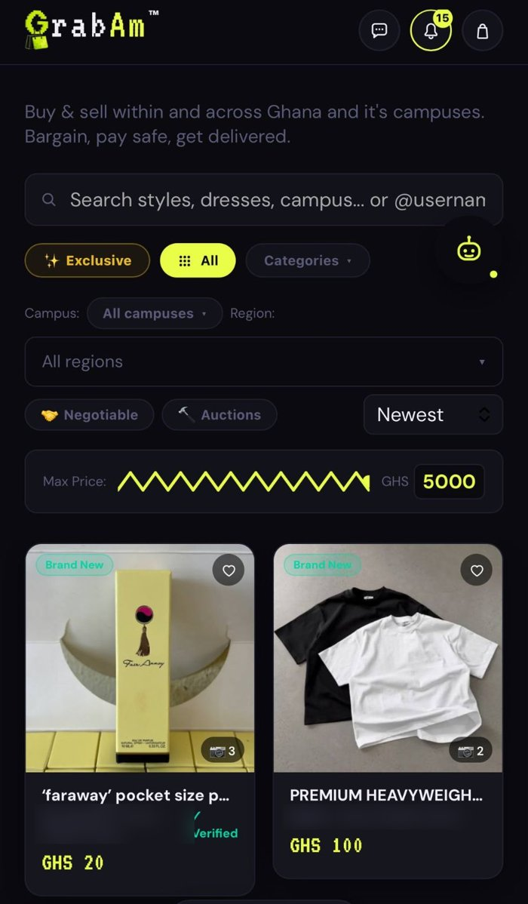
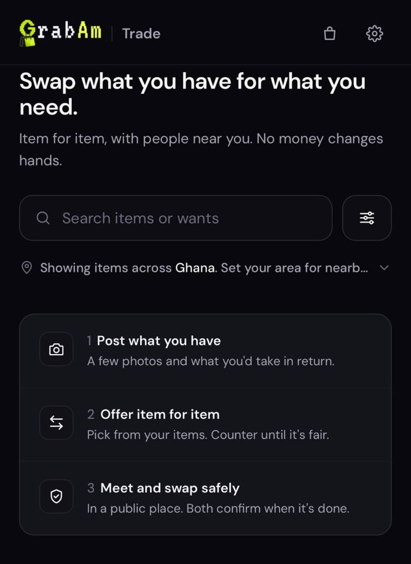

I build real products in Ghana and have been doing the compliance work behind them myself. Now I'm formalizing that into a career in governance, risk and compliance.
Accra and Tamale, Ghana · Open to remote work (GMT) and relocation
Founder · 2026 to present · A Siryn Technologies Limited venture · grabam.com
A peer-to-peer marketplace for students and the general public in Ghana, paid with mobile money (MTN MoMo, Telecel Cash, AT Money). The buyer's payment is held with Moolre, a payment service provider licensed by the Bank of Ghana, until the item is delivered. It also has GrabAm Trade, where people swap items for items with no money involved.
What I built
The full product, without a development team: React front end; Supabase (Postgres) database and access control; Vercel serverless API; Moolre payments, payouts, refunds and SMS; Cloudinary media; Resend email.
Marketplace mechanics: held payments with seller payouts after delivery, a dispute window, refunds, a wallet, offers and counter-offers, auctions, buyer requests, and an admin and moderation panel.
GrabAm Trade: item-for-item swaps with multi-item offers, a two-sided "we swapped" confirmation and ratings.
Grabby Bot: an in-app AI shopping assistant that answers from the platform's own policies and data.
How: with AI-assisted development (Claude Code). I own the architecture, the compliance decisions, and the review and testing of every change.
Where it is today Public launch: October 2026
Live with real mobile money payments, seller payouts, refunds and disputes running end to end, and GrabAm Trade open to anyone in Ghana at trade.grabam.com. Early stage: the focus now is growing the seller base.

Marketplace: browse, bargain, pay with MoMo. Other users' names blurred.

GrabAm Trade: item-for-item swaps.
GRC in practice: the controls behind GrabAm
This is where my product work and the GRC direction meet. Each of these is running in production, not a plan.
Data protection by design
Privacy policy written against Ghana's Data Protection Act, 2012 (Act 843). Phone numbers, mobile money numbers and one-time codes are scrubbed from error logs before they leave the app.
Privacy · data minimisation
Least-privilege access
Database access is denied by default and opened per table and per column. Every rule is tested by acting as a real user, including the cases that must be refused.
Access control · testing
Audit trail
Every admin action is logged with a before and after record. Every change to the product is written up in a numbered change log: what was wrong, the evidence, what changed, and what was and wasn't verified.
Accountability · change management
Backup and recovery that's tested
Nightly encrypted, off-platform database backups. A monthly drill restores a backup into a clean database and fails if any table's row count doesn't match.
Business continuity
KYC-informed onboarding
Phone verification at signup, and the name on the mobile money account must match the user's name, checked on the server. Designed after researching obligations under Ghana's Anti-Money Laundering Act, 2020 (Act 1044).
Identity · AML
Consumer-protection controls
Payments are held until delivery. A seller must confirm they still have the item, or the order cancels itself with a full refund. Policies are written in plain language and each rule maps to the code that enforces it.
Fair dealing · policy-to-control mapping
I also evaluated escrow licensing requirements under Ghana's Payment Systems and Services Act, 2019 (Act 987), which is why customer funds are held by a licensed payment service provider rather than by GrabAm.
Siryn Technologies Limited
Founder & CEO · 2025 to present · Emergency dispatch coordination for Ghana (in development) · siryntechnologies.com
Ghana's police, fire and ambulance services each run their own dispatch. Siryn is a civic technology platform for coordinating emergency response across them, aimed at government and institutional partners.
Registered the company and lead it.
Drafted a Memorandum of Understanding and formal institutional proposals addressed to the Ghana Police Service, Ghana National Fire Service, National Ambulance Service, Ministry of Health and National Communications Authority.
Led meeting preparation and follow-up with the National Communications Authority, turning technical material into documents non-technical officials could act on.
Drafted a patent application covering the platform's core dispatch mechanism.
Currently building toward
Google Cybersecurity CertificateIn progress
ISC² Certified in Cybersecurity (CC)In progress
Data science track (since October 2025): Python, SQL, R, statistical inference and machine-learning foundations
Why GRC
I've always preferred reading a system closely enough to see where it breaks: the gap between what a rule says and what actually happens. Building GrabAm, the work I cared about most wasn't features. It was making sure the product respected people's rights and complied with the law, from the Data Protection Act to how customer money is held. That's what I want to do full time: help people and companies stay compliant, and make sure the controls actually hold. I'd rather read and reason through a framework than crunch numbers, and GRC is where that fits.
Acting Manager, Kuzembela Auto Parts EnterpriseRan daily operations, supervised staff, and managed customer relationships and business records.
Nov 2023 to Oct 2024
Administrative & ICT Support Assistant, Amanase Senior High SchoolNational Service. IT and administrative support, and keeping school records accurate.
Sept 2022 to Nov 2022
Intern, Ministry of Gender, Children and Social ProtectionFieldwork on children's sexual health advocacy; collected and analysed data for policy reports.
Apr 2019 to Jun 2019
Volunteer, Adanu Foundation (NGO), NigeriaFundraising, donation distribution and community health outreach.
2019 to 2023
BA in Humanities (Political Science & Classical Studies)University of Ghana, Legon